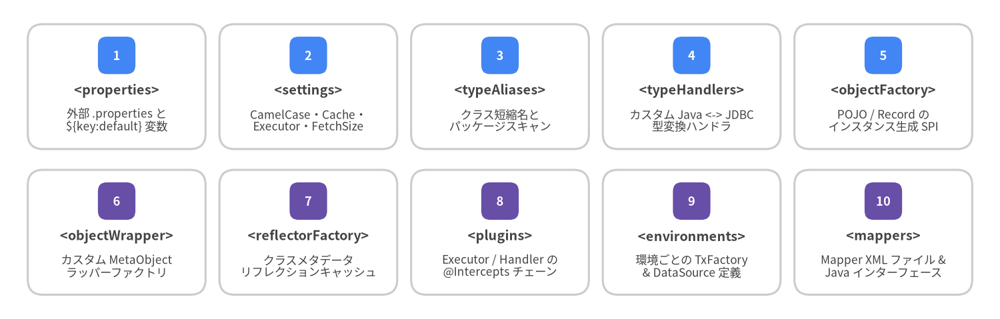
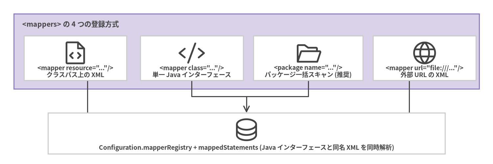

2. XML 設定 (mybatis-config.xml)
ルート設定ファイル (mybatis-config.xml) は、ランタイム <settings>、<typeAliases>、カスタム <typeHandlers>、<plugins>、<environments>、<databaseIdProvider>、および <mappers> など、SqlSessionFactory 全体のグローバルな動作を定義します。
<configuration> 子要素の厳密な記述順序
mybatis-3-config.dtd は順序付きの DTD コンテンツモデルで XML 構造を検証するため、<configuration> 直下の子要素は 必ず以下の順序どおりに記述 しなければなりません。

Source Code
from drawlib.canvas import save, setup
from drawlib.smartarts import CardList
from drawlib.styles import Colors, Styles
setup(width=144, height=46, dpi=150)
row1 = CardList(
style=Styles.Neutral.patch(shape_fill_color=Colors.White),
text_style=Styles.DarkBold.patch(text_size=9.5),
description_style=Styles.Dark.patch(text_size=8.3),
badge_shape="rounded_rect",
badge_style=Styles.PrimaryFlat,
badge_text_style=Styles.WhiteBold.patch(text_size=8.8),
direction="horizontal",
spacing=2.0,
)
row1.add("<properties>", "外部 .properties と\n${key:default} 変数", badge_text="1")
row1.add("<settings>", "CamelCase・Cache・\nExecutor・FetchSize", badge_text="2")
row1.add("<typeAliases>", "クラス短縮名と\nパッケージスキャン", badge_text="3")
row1.add("<typeHandlers>", "カスタム Java <-> JDBC\n型変換ハンドラ", badge_text="4")
row1.add("<objectFactory>", "POJO / Record の\nインスタンス生成 SPI", badge_text="5")
row1.draw((4.0, 24.5), width=136.0, height=18.0, align="bottom_left")
row2 = CardList(
style=Styles.Neutral.patch(shape_fill_color=Colors.White),
text_style=Styles.DarkBold.patch(text_size=9.5),
description_style=Styles.Dark.patch(text_size=8.3),
badge_shape="rounded_rect",
badge_style=Styles.SecondaryFlat,
badge_text_style=Styles.WhiteBold.patch(text_size=8.8),
direction="horizontal",
spacing=2.0,
)
row2.add("<objectWrapper>", "カスタム MetaObject\nラッパーファクトリ", badge_text="6")
row2.add("<reflectorFactory>", "クラスメタデータ\nリフレクションキャッシュ", badge_text="7")
row2.add("<plugins>", "Executor / Handler の\n@Intercepts チェーン", badge_text="8")
row2.add("<environments>", "環境ごとの TxFactory\n& DataSource 定義", badge_text="9")
row2.add("<mappers>", "Mapper XML ファイル &\nJava インターフェース", badge_text="10")
row2.draw((4.0, 3.5), width=136.0, height=18.0, align="bottom_left")
save()
[!IMPORTANT]
<typeAliases>を<settings>より前に記述したり、<plugins>を<environments>の後に記述すると、起動時にXMLConfigBuilderが SAX DTD 検証エラー (The content of element type "configuration" must match "(properties?,settings?,typeAliases?,typeHandlers?,objectFactory?,objectWrapperFactory?,reflectorFactory?,plugins?,environments?,databaseIdProvider?,mappers?)") をスローして即座に失敗します。
本番環境向け mybatis-config.xml テンプレート
<?xml version="1.0" encoding="UTF-8" ?>
<!DOCTYPE configuration
PUBLIC "-//mybatis.org//DTD Config 3.0//EN"
"https://mybatis.org/dtd/mybatis-3-config.dtd">
<configuration>
<!-- 1. 外部プロパティファイル読み込み & デフォルト値構文の有効化 -->
<properties resource="db.properties">
<property name="org.apache.ibatis.parsing.PropertyParser.enable-default-value" value="true"/>
</properties>
<!-- 2. グローバルランタイム設定 -->
<settings>
<setting name="mapUnderscoreToCamelCase" value="true"/>
<setting name="localCacheScope" value="STATEMENT"/>
<setting name="cacheEnabled" value="true"/>
<setting name="defaultExecutorType" value="SIMPLE"/>
<setting name="defaultFetchSize" value="200"/>
<setting name="defaultStatementTimeout" value="30"/>
<setting name="jdbcTypeForNull" value="NULL"/>
<setting name="returnInstanceForEmptyRow" value="true"/>
<setting name="argNameBasedConstructorAutoMapping" value="true"/>
</settings>
<!-- 3. ドメインモデルの短縮型エイリアス -->
<typeAliases>
<package name="com.example.blog.domain"/>
</typeAliases>
<!-- 4. カスタム Java <-> JDBC TypeHandler -->
<typeHandlers>
<typeHandler handler="com.example.blog.type.MoneyTypeHandler"/>
</typeHandlers>
<!-- 8. インターセプタプラグイン -->
<plugins>
<plugin interceptor="com.example.blog.plugin.QueryMetricsPlugin">
<property name="slowThresholdMs" value="250"/>
</plugin>
</plugins>
<!-- 9. データベース環境定義 -->
<environments default="production">
<environment id="production">
<transactionManager type="JDBC"/>
<dataSource type="POOLED">
<property name="driver" value="${db.driver:org.postgresql.Driver}"/>
<property name="url" value="${db.url:jdbc:postgresql://localhost:5432/blog}"/>
<property name="username" value="${db.username:postgres}"/>
<property name="password" value="${db.password:secret}"/>
<property name="poolMaximumActiveConnections" value="20"/>
<property name="poolMaximumIdleConnections" value="5"/>
<property name="poolPingEnabled" value="true"/>
<property name="poolPingQuery" value="SELECT 1"/>
</dataSource>
</environment>
</environments>
<!-- 10. Mapper の一括パッケージ登録 -->
<mappers>
<package name="com.example.blog.mapper"/>
</mappers>
</configuration>
重要 <settings> リファレンス
org.apache.ibatis.session.Configuration が持つ 30 以上の設定項目のうち、本番運用での正確性とパフォーマンスに最も大きく影響する 9 項目は以下のとおりです。
| 設定名 | デフォルト | 推奨値 | 効果 |
|---|---|---|---|
mapUnderscoreToCamelCase |
false |
true |
スネークケースの SQL カラム (created_at) をキャメルケースの Java プロパティ (createdAt) に自動マッピングします。 |
argNameBasedConstructorAutoMapping |
false |
true |
カラムの出現順ではなく Java の -parameters 引数名に基づいてコンストラクタ引数を自動マッピングします (Java record に最適)。 |
localCacheScope |
SESSION |
STATEMENT |
マルチインスタンス構成や長時間セッションにおける L1 キャッシュの古いデータ読み取り (Dirty Read) を防ぎます。 |
cacheEnabled |
true |
true |
L2 <cache> 名前空間のマスタースイッチ (Executor を CachingExecutor でラップします)。 |
defaultExecutorType |
SIMPLE |
SIMPLE |
SimpleExecutor (SIMPLE)、ReuseExecutor (REUSE)、BatchExecutor (BATCH) を切り替えます。 |
defaultFetchSize |
null |
100〜500 |
Statement.setFetchSize(n) ヒントを設定し、大量行の ResultSet をチャンク単位でフェッチさせます。 |
defaultStatementTimeout |
null |
10〜30 (秒) |
Statement.setQueryTimeout(seconds) を設定し、暴走クエリからシステムを保護します。 |
jdbcTypeForNull |
OTHER |
NULL / VARCHAR |
Oracle や DB2 の JDBC ドライバは型未指定の null パラメータに対する Types.OTHER を拒否するため、NULL に変更すると移植性が高まります。 |
callSettersOnNulls |
false |
true (Map 利用時) |
SQL の値が NULL のカラムであっても、結果の Map にキーを確実に含めるようにします。 |
プロパティの優先順位と Mapper 登録戦略
<properties> 使用時、XMLConfigBuilder は以下の 3 段階で変数を解決します (後者ほど優先度が高くなります)。
<properties>内部の<property name="..." value="..."/>子要素。resource="..."(クラスパス) またはurl="..."で読み込まれた外部ファイル。new SqlSessionFactoryBuilder().build(reader, props)に渡された JavaProperties引数 (最優先)。

Source Code
from drawlib.canvas import save, setup
from drawlib.diagrams.architecture import ArchitectureDiagram, Node, NodeGroup, PhosphorIcon
from drawlib.styles import Colors, Styles
setup(width=144, height=48, dpi=150)
d = ArchitectureDiagram(
node_style=Styles.Dark,
node_text_style=Styles.DarkBold.patch(text_size=9.2),
edge_style=Styles.Dark.patch(line_width=1.5),
edge_text_style=Styles.DarkBold.patch(text_size=8.8),
node_card_style=Styles.Neutral.patch(shape_fill_color=Colors.White),
)
grp = d.add(
NodeGroup(
"<mappers> の 4 つの登録方式",
width=136,
height=22,
style=Styles.SecondaryNeutral,
text_style=Styles.DarkBold.patch(text_size=10.2, halign="left", valign="top"),
),
xy=(4, 22),
)
n_res = grp.add(Node('<mapper resource="..."/>\nクラスパス上の XML', icon=PhosphorIcon.FILE_CODE, width=30, height=13), xy=(18, 9))
n_cls = grp.add(Node('<mapper class="..."/>\n単一 Java インターフェース', icon=PhosphorIcon.CODE, width=30, height=13), xy=(52, 9))
n_pkg = grp.add(Node('<package name="..."/>\nパッケージ一括スキャン (推奨)', icon=PhosphorIcon.FOLDER_OPEN, width=32, height=13), xy=(86, 9))
n_url = grp.add(Node('<mapper url="file:///..."/>\n外部 URL の XML', icon=PhosphorIcon.GLOBE, width=30, height=13), xy=(120, 9))
n_reg = d.add(
Node("Configuration.mapperRegistry + mappedStatements (Java インターフェースと同名 XML を同時解析)", icon=PhosphorIcon.DATABASE, width=116, height=12),
xy=(72, 9),
)
n_res.connect(n_reg)
n_cls.connect(n_reg)
n_pkg.connect(n_reg)
n_url.connect(n_reg)
d.draw(xy=(0, 0))
save()
Mapper インターフェースと XML ファイルの同一パッケージ配置
<package name="com.example.blog.mapper"/> または configuration.addMapper(AuthorMapper.class) で登録すると、MapperAnnotationBuilder は クラスパス上の同一パッケージ階層にある同名 XML リソース (com/example/blog/mapper/AuthorMapper.xml) を自動的に検索してロード します。src/main/java と src/main/resources でパッケージ階層を揃えておくことで、<package> 1 行でアノテーションと XML の両方が登録されます。